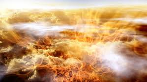

JUPITER
JUPITER
The Gas Giant


The atmosphere of Jupiter essentially makes up the entire planet. The gas giant has no firm surface to touch down on. Instead, it is composed almost entirely of hydrogen and helium, with a few traces of other gases comprising a tiny percentage of its air.
Atmospheric makeup

- Predominantly Hydrogen
- Ammonia
- Sulfur
- Methane
- Water vapour
Here is some information regarding the stormy atmosphere at the gaseous planet Jupiter.
Layers of Atmosphere
- The layer resting on the "surface" of the gas giant is known as the troposphere, and extends to approximately 31 miles (50 kilometers) above the surface. The troposphere contains ammonia, ammonium hydrosulfide, and water, which form the distinctive red and white bands seen from Earth. The colder white bands are known as zones, while the darker red ones are belts. Gases within the zones rise, while within the belts they fall.Winds generally keep the two regions separate, but sometimes the icy white clouds will overlay the red bands, causing them to disappear for a period of time.The next layer, the stratosphere, extends to almost 200 miles (320 km) above the surface, containing hazes of hydrocarbons.The outermost layer of Jupiter's atmosphere is the exosphere, where gas particles can escape into space. With no clear boundary, the exosphere bleeds into interstellar space.
The Giant Red Spot
- In addition to the red and white bands that make Jupiter visually stunning, the planet also boasts a prominent feature known as the Great Red Spot. First identified in the 1600s, the spot is actually a violent storm located just south of the planet's equator. The violent hurricane can be seen from telescopes on Earth.
Powering the magnetic field
- Third of the way into the planet, the hydrogen in the atmosphere becomes metallic, allowing it to conduct electricity. This helps to drive Jupiter's powerful magnetic field. The planet rotates rapidly — once every 9.9 hours — and the rapid spinning causes electrical currents in the metallic hydrogen to generate electricity that powers the planet's magnetic field.